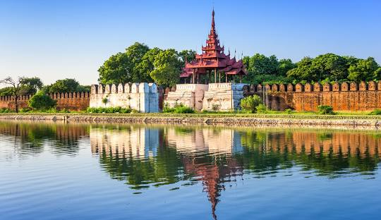

About Madalay

Mandalay is the second-largest city in Myanmar.
It was the last royal capital of the country and is known for its rich history and culture.
Key sites include the Mandalay Palace and Mahamuni Pagoda. The city is famous for traditional crafts like silk weaving and wood carving.
It's located by the Irrawaddy River and is a gateway to other attractions in Myanmar
Popular Places
- Mandalay PalaceThe last royal palace of the Burmese kings, featuring impressive architecture and beautiful grounds.
- Mahamuni PagodaA famous Buddhist temple known for its revered statue of Buddha, covered in gold leaf.
- Kuthodaw Pagoda Home to the world's largest book, consisting of 729 marble slabs inscribed with Buddhist texts.
- U Bein Bridge A stunning teak bridge that stretches over Taungthaman Lake, known for its picturesque views, especially at sunset.
- Sagaing Hil A scenic area with numerous pagodas and monasteries, offering panoramic views of the surrounding countryside and the Irrawaddy River.
Back to homepage